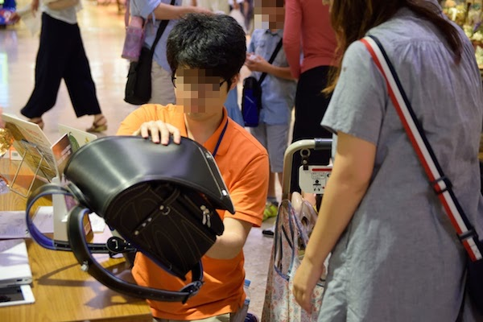
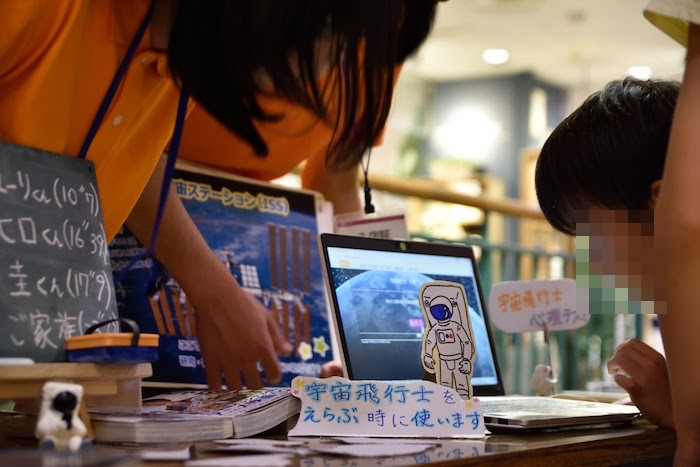
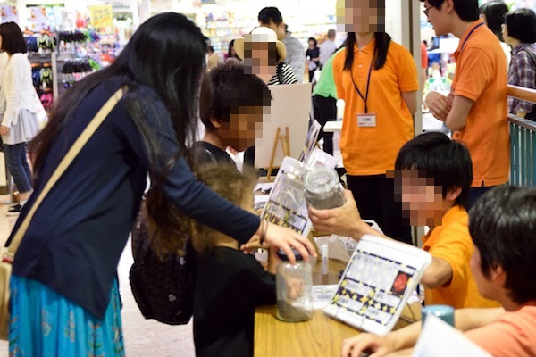
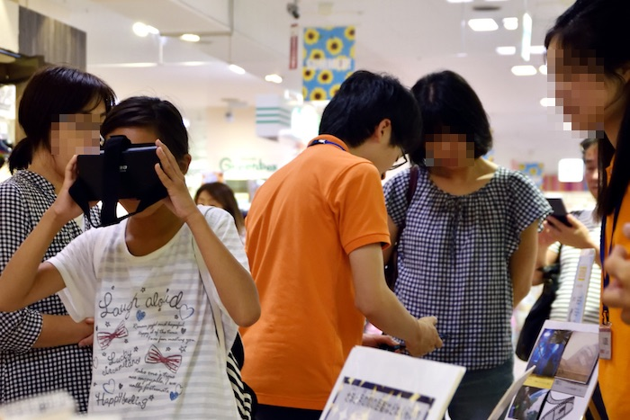
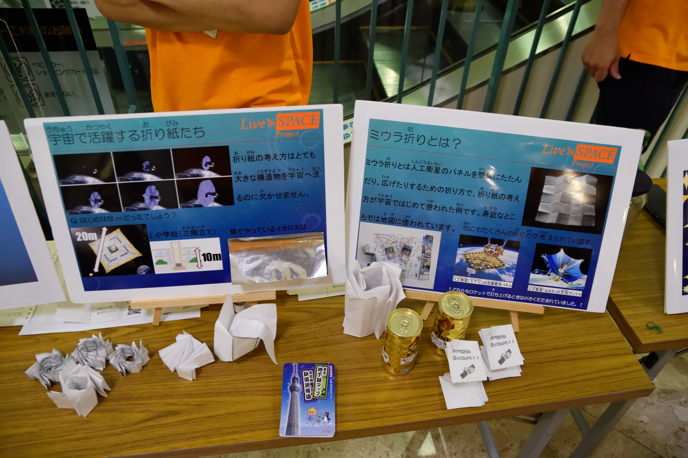

FEELは今年で13回目！(FEELとは、“買物途中”のお客様が、ほんのちょっと宇宙を好きになるイベントです!)
今年は計540人以上の方にご覧いただきました。
開催日:6月18日(土)、19(日)
開催場所：イオン相模原ショッピングセンター

スピンオフ班では、「宇宙技術は身近にあるということを知ってもらおう!」というコンセプトのもと、宇宙開発の中で生まれた技術が使われた製品(スピンオフされた製品)を紹介しました。
実物として、2つの製品をご紹介しました。1つ目は NASAの「SPACE BRAND BLANKET」。宇宙において宇宙飛行士を放射線や熱の変化から守るために開発された素材が、防災時の保温シートに応用されたものです。2つ目は株式会社池田地球の「地球NASAランドセル」。宇宙空間で使用するグローブのために NASA により開発された温度調節素材や、衝撃吸収材などが用いられたランドセルです。
これらの紹介に加え、お客さんに楽しんでいただけるようなクイズも実施しました。

宇宙飛行士班では、「“宇宙飛行士”という存在を通して、宇宙の面白さを伝えよう」をコンセプトに掲げ、地球に帰還した油井さんや6月に打ち上げを控える大西さんの紹介・宇宙飛行士心理テストを用意しました。
油井さん・大西さんの紹介では、ミッション内容・宇宙から地球へ発信したメッセージなどを挙げ、宇宙飛行士心理テストにおいては、来場者の方に回答していただいた簡単な質問を基に、どの宇宙飛行士タイプに属しているのかを診断していきます。

クイズを自ら解くことで楽しみながら宇宙、特に天文について興味を持ったり知識をつけてもらうことを狙いとしています。
クイズの内容は天文宇宙検定の問題を参照しいくつかの難易度を用意することで子 供から大人まで幅広い年齢層に対応できるようになっています。また、隕石や月の砂レゴリス(レプリカ)をブースに持って行き、それらに関連した問題を設けて実際に手にとってもらいながらクイズに取り組んでいただきました。

宇宙を扱った映画はこれまで数多く製作され、その中でも空想の世界を描いた SF(サイエンスフィクション)や実話に基づいたものなど、幅広いジャンルがあります。今回、主に有名な宇宙映画をいくつか紹介していき、その過程で「映画の世界と現実の科学や 技術を比較する」「宇宙で映画を撮影したかのように見せる特殊効果を紹介する」「なぜ 宇宙というジャンルの映画は長年人々の心を捉えてきたのか」など、様々な視点から説明していきたいと考えています。
例えば2009年の映画「アバター」には、地球に最も近い星の惑星で貴重な資源を採掘する様子が描かれますが、希少資源を含んだ小惑星を採掘するという計画の開発が現実にも進められています。このように、「映画」とい う親しみやすいコンテンツを通して実際の宇宙開発・宇宙探査についても興味を持っていただくことが本企画の目標です。
説明のためのパネルに加え、最新のVR(バーチャルリアリティ)技術を用いて、宇宙に行ったかのような映像をご覧いただきました。
 近年、人工衛星以外にも巨大なホテルの開発や月面及び火星の開拓に伴う基地の設計 が世界各地で着々と進行しています。このブースでは、これまでの FEEL でもたびたび 取り扱ってきたミウラ折りをはじめとする様々な人工衛星の膜翼等展開システムのみならず、宇宙ホテルや月面基地などに使われるあるいは使われる可能性のあるインフレ ータブル構造物の基本的な原理を、実際にそれらの技術が応用されている商品やペーパークラフトなどを用いて展示・説明を行いました。